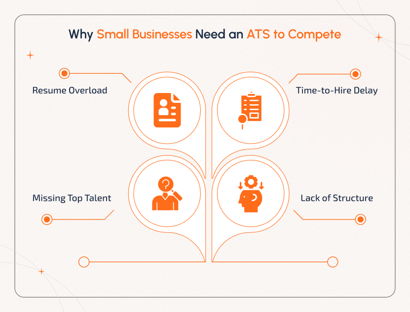
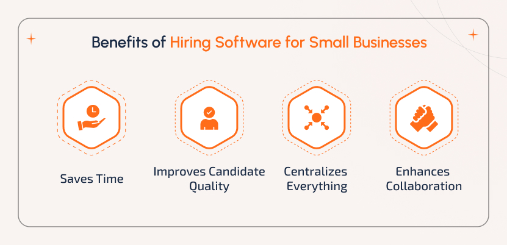
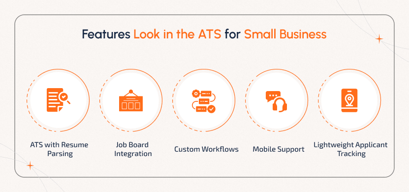
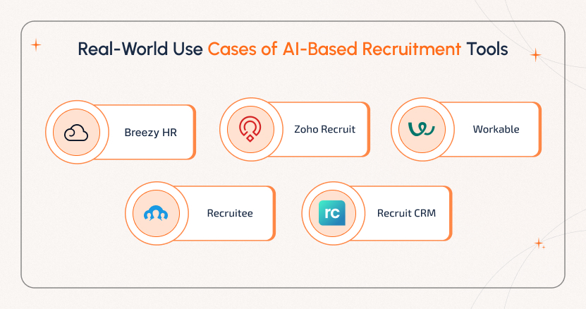
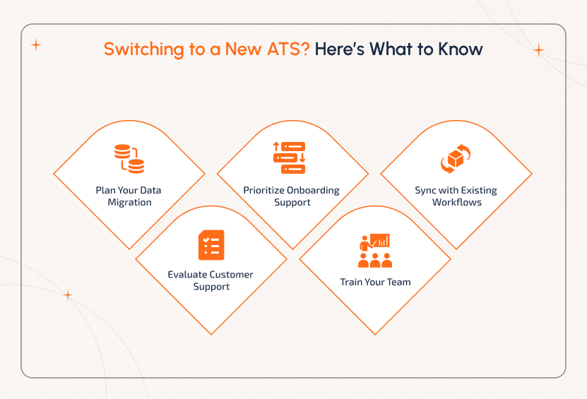

Have you ever wondered what is applicant tracking and why every small business needs one? Just think of an applicant tracking system (ATS) as your digital hiring tool that automates everything—from posting job openings to screening resumes, scheduling interviews, and even managing onboarding—all under one streamlined platform
As per a Recruit CRM report, more than 60% of small businesses are using ATS platforms, which was a 35% increase compared to a few years ago. With hiring becoming more competitive and challenging, especially post-remote-work boom, small teams are choosing smarter technologies to keep up.
Ultimately, a modern applicant tracking system for small businesses not only saves time but also boosts business growth. No matter if you are hiring employees during your initial stage or expanding your team, the ATS offers a professional edge, speeds up decision-making, and ensures you never miss out on top talent again.
Why Small Businesses Need an ATS to Compete?
The hiring process has never been so challenging. This is especially true for small businesses, as the recruitment landscape is more competitive than ever. When you're competing against enterprises with HR teams and big recruitment budgets, it's vital to adopt the right ATS for small businesses to make all the difference.
Without one, small teams end up relying on sticky notes, spreadsheets, and inboxes to manage candidates. With manual systems, bottlenecks arise and slow down hiring, increase the risk of errors, and ultimately cost you great candidates.
Small Businesses Should Choose ATS to Overcome the Following:

Sorting the best candidates from thousands of applications manually takes lots of hours. With smart hiring software for small businesses, it is easy to automate screening, shortlist top talent, and rank applicants based on the job fit.
As per SHRM, the average time to fill a role is 36+ days, and it may increase for small businesses without automation. Relying on recruiting software for small companies cuts down the time with built-in scheduling, pipeline tracking, and templated communication.
It is found that the best candidates are typically off the market within 10 days. Thus, without the right small business recruiting software, you will likely lose top talent just because you cannot process recruiting faster.
An unplanned hiring leads to poor candidate experiences and inconsistent evaluations. An ATS for small businesses ensures every applicant is tracked and every decision is data-driven.
In brief, investing in modern small business recruiting software is not just about adding another tool. Rather, it is about making a transformation during hiring. With the right recruiting software for small companies, even the lean teams can hire smarter, faster, and competitively.
Key Benefits of Using Hiring Software for Small Businesses
With the right applicant tracking software for small businesses, companies can do more than just store resumes. Here's how it transforms hiring:

With built-in automation, resume parsing, and interview scheduling, hiring automation for small businesses minimizes manual work while reducing time-to-hire.
To focus on top talent faster, hiring software uses smart filters and scoring. Thus, there's no more guesswork or sifting through unqualified resumes.
A simple applicant tracking system keeps all the details, including candidate data, notes, and communication, in one place. Thus, recruiters can easily access and manage them.
With cloud-based access, your team can easily review applicants, leave feedback, and make faster hiring decisions. The best small business HR software will turn your team into a recruiting machine.
Automate hiring tasks, manage candidates in one place, and scale with ease.
Features to Look for in the Best ATS for Small Business
Choosing the best ATS for small businesses means finding a tool that is not just powerful but also easy to use. The must-have features to look for are as follows:

The best ATS software will extract and organize candidate information effortlessly. This, in turn, saves time and reduces manual entry.
You should be able to post on multiple sites from one dashboard with a few clicks using the best ATS for small businesses.
The ATS platform should come with customized hiring stages and ensure it matches your process, whether you’re hiring freelancers or full-time staff.
Any modern online hiring software should allow recruiters to review applications, send messages, and schedule interviews from anywhere.
Small teams need speed and simplicity, not enterprise features. Hence, look for systems that are fast, intuitive, and built for growing businesses.
How Startups & Growing Teams Use an Applicant Tracking System to Scale Efficiently
Startups are constantly evolving, and your hiring process should evolve too. An applicant tracking system for startups offers the speed, structure, and scalability needed to grow your team without slowing operations or overshooting your budget.
With a lightweight ATS for small companies, you can automate repetitive tasks, centralize candidate data, and manage your entire hiring pipeline from a single, intuitive platform. No more digging through spreadsheets or missing out on follow-ups.
For those seeking a more advanced solution, a modern recruitment CRM for startups helps build talent pools, track every candidate touchpoint, and nurture long-term hiring relationships—all while staying within a startup-friendly budget.
Ultimately, the right ATS empowers growing teams to hire smarter, scale faster, and stay lean.
Top 5 Best Applicant Tracking Systems for Small Businesses in 2025
Choosing the right applicant tracking system not only simplifies hiring, it speeds it up. Whether you're a startup or a growing team, the right small business recruiting software helps you source top talent faster, stay organized, and hire efficiently, without going over budget. Here are the top 5 best applicant tracking systems for small businesses in 2025:

If you're asking, “Is there a free ATS system?” — Breezy HR is the answer. It's perfect for startups or teams hiring occasionally but needing structure. With unlimited users in the free tier, it's one of the easiest tools to get started with.
- Resume parsing
- Drag-and-drop pipelines
- Branded career pages
- Automated messaging
Price: Free plan (1 active job), paid plans from $157/month
Zoho Recruit is one of the best ATS for small business teams looking to scale. It offers a highly customizable and budget-friendly platform, especially valuable if you’re already using other Zoho tools.
- AI-powered resume parsing
- Multi-channel job board posting
- Custom workflows
- Candidate assessments
Price: Free plan (1 active job), paid from $25/user/month
Workable is an excellent choice for startups scaling fast and needing global reach. It combines an intuitive UI with powerful automation and broad visibility.
- 200+ job board integrations
- AI-powered sourcing
- Hiring pipeline automation
- Full-featured mobile app
Price: Pay-per-job (~$129/job) or monthly plans from $149/month
Recruitee is a top-rated, lightweight applicant tracking system focused on collaboration. It’s great for cross-functional hiring, with easy-to-use features and strong analytics.
- Custom hiring workflows
- Email templates & automation
- Team scoring system
- Real-time analytics dashboard
Price: Free trial (18 days), paid plans from $249/month
Looking for both an ATS for small companies and a recruitment CRM for startups? Recruit CRM blends both worlds. It’s ideal for agencies or teams managing long-term candidate pipelines.
- Resume parsing & pipelines
- Chrome extension for sourcing
- Client/candidate relationship tracking
- Interview scheduling tools
Price: Free trial available, paid plans from $40/user/month
How to Choose the Right ATS for Your Small Business Needs
With dozens of options available on the market, choosing the right applicant tracking system (ATS) for small business can feel overwhelming. However, the right choice depends on your specific goals, hiring stage, and growth plans.
Smaller business teams with occasional hiring needs can benefit from a lightweight applicant tracking system like Breezy HR or Zoho Recruit. But if you are hiring at scale or across departments, consider tools like Workable or Recruitee with multi-user workflows and advanced automation.
If you are budget-conscious, then you should explore free or low-cost applicant tracking systems like Zoho Recruit. It offers core functionality without the hefty price tag. For more robust needs, choose between Workable and Recruit CRM, as they provide value with premium pricing.
Those hiring in tech should look for API-ready tools with developer-friendly integrations. For staffing agencies, an ATS with CRM capabilities like Recruit CRM supports tracking both clients and candidates. Further, industries like healthcare or finance may require compliance features and audit trails.
Choose an ATS that integrates with your HR, payroll, and collaboration tools. For instance, Zoho Recruit integrates seamlessly into the Zoho ecosystem, while Recruitee can easily connect with Slack, G Suite, etc.
If you are wondering which ATS is best for small business expansion, then look for a platform that scales with you. It is important to check if it supports advanced workflows, multiple hiring teams, and external recruiter collaboration as your needs grow.
Choosing the right ATS is not just about picking the most popular platform; it is about finding the one that aligns with how you hire today and how you plan to grow tomorrow.
Get tailored help choosing the right applicant tracking system for small business needs.
Switching to a New ATS? Here’s What to Know
You may think of moving from spreadsheets or outdated hiring tools to a modern applicant tracking system as a complex, tiring process, but it doesn’t have to be. Whether you’re switching from manual tracking or legacy software, the following are some key things to consider to make the transition smooth and effortless.

This involves exporting your candidate data, job listings, documents, and notes from your current systems or spreadsheets. Most modern applicant tracking software for small businesses provides CSV import tools and migration support, which you should ask about upfront.
It’s important not to settle for tools that leave you guessing. The best ATS for small businesses offers guided onboarding, setup walkthroughs, and knowledge bases. Some even assign a dedicated account manager to make the implementation fast.
You should choose an ATS that mirrors how your team already works. Whether it’s pipelines, hiring stages by department, or built-in interview scheduling, custom workflows and automation reduce manual effort.
Responsive support is important when questions arise. Hence, businesses should look for ATS systems with live chat, phone support, or email ticketing. Reliable support during the first 30 days is critical for a smooth transition.
It’s important not to overlook internal adoption. Hence, businesses should choose a simple applicant tracking system that your hiring team can start using with minimal training. The easier it is, the faster the ROI.
Why Small Businesses Choose Sparkout as a Recruiting Software Development Company
As a leading recruiting software development company, experts at Sparkout build custom applicant tracking systems that solve real hiring challenges for startups and growing businesses.
We ensure our ATS solutions are lightweight, scalable, and tailored to meet the needs of small teams that want to hire smarter. Whether you need a simple applicant tracking system, a robust recruitment CRM for startups, or an ATS with resume parsing and automation, we build platforms that speed up your hiring process and improve candidate quality while reducing manual overload.
- We build custom-built workflows for small teams
- Our solutions are integration-ready with job boards & HR tools
- We develop solutions with a mobile-friendly UI and quick deployment
- Most of all, our solutions come at affordable pricing for small business budgets
- We provide ongoing support, scaling, and feature upgrades
We craft lightweight, scalable ATS solutions designed for small business growth.
Final Thoughts – The Future of Hiring for Small Teams
The hiring landscape is changing fast, and small teams need to keep up with the trend to increase the chance of hiring the right candidate at the right time. Today’s applicant tracking software for small businesses isn’t just a digital resume collector—they're becoming a central part of how small companies attract, assess, and onboard top talent.
From AI-powered screening to automated scheduling, modern small business recruiting software is designed to eliminate guesswork, save time, and give growing teams a competitive edge.
As the recruitment process continues to merge with broader HR functions like onboarding, compliance, and employee engagement, selecting the right system becomes more important than ever.
Whether you’re a startup hiring your first few employees or a growing team looking to scale, the right ATS for small businesses can help you streamline hiring, improve the candidate experience, and make smarter, faster decisions.